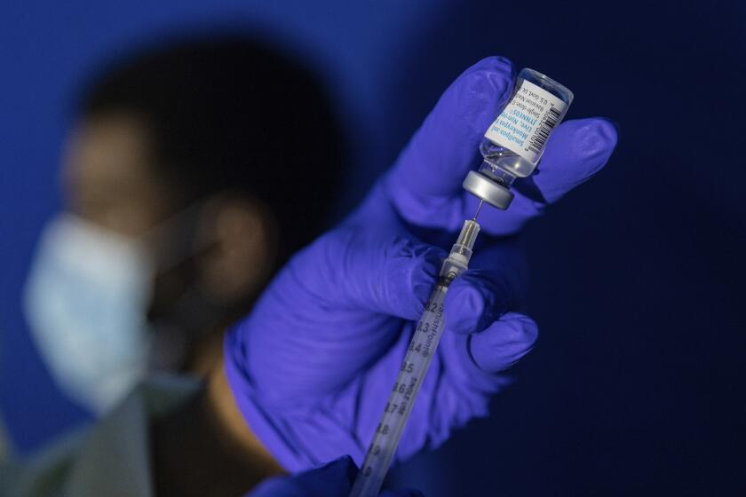

THE DEMOCRATIC REPUBLIC OF THE CONGO KICKS OFF MPOX VACCINATION
The Democratic Republic of Congo has begun mpox (formerly known as monkeypox) vaccinations in a bid to curb rising outbreaks. Health authorities are prioritizing high-risk areas, aiming to prevent the disease from spreading further. Mpox has re-emerged in several regions, and Congo’s vaccination campaign is part of a broader effort to control the virus. The initiative also underscores the need for swift responses to public health threats.
Kinshasa – The Democratic Republic of the Congo today kicked off mpox vaccination, adding a vital measure to complement the ongoing outbreak control efforts to halt the spread of the viral disease and save lives.
The vaccination, launched in the eastern North Kivu province, will prioritize health workers and frontline responders, contacts of confirmed cases, contacts of those contacts, and other at-risk groups. The vaccination will subsequently be rolled out in 11 of the most affected health zones in Equateur, North Kivu, Sankuru, South Kivu, Sud-Ubangi and Tshopo provinces.
The Democratic Republic of Congo has received 265 000 doses of the MVA-BN vaccine donated by the European Commission's Health Emergency Preparedness and Response Authority, Gavi, the Vaccine Alliance, and the United States Government.
“As we rally efforts to stop the mpox outbreak, the rollout of the vaccine marks an important step in limiting the spread of the virus and ensuring the safety of families and communities,” said Dr Matshidiso Moeti, WHO Regional Director for Africa. “Vaccines are an important additional tool in outbreak control and we’re grateful to our partners who have donated the doses. We’re working closely with the national authorities to effectively deliver the vaccines to those who need them most.”
WHO recommends that vaccination be implemented as part of a comprehensive response that includes enhanced surveillance, community engagement, contact tracing, public health and social measures, and appropriate case management. WHO and partners are working closely with the national authorities to scale up and reinforce all the key control measures to save lives and end the outbreak.
To further strengthen the ongoing outbreak response, more than 300 WHO experts supporting polio eradication efforts in the Democratic Republic of the Congo have been integrated in the mpox response. The experts have extensive field experience in public health, particularly in community-based and health-facility active surveillance, case investigations, contact tracing and risk communication, and have been at the forefront in the fight against polio and other vaccine-preventable diseases.
In preparations for the mpox vaccination, WHO has supported the national health authorities in a range of areas, including training of health workers; enhancing vaccine delivery systems and infrastructure such as vaccine storage and transportation; community engagement; as well as ensuring supervision and evaluation of the process for quality vaccine delivery. Efforts are also ongoing to reinforce measures to identify and address vaccine mis- and disinformation and engage with community and religious leaders to increase access to accurate information.
Mpox vaccines are currently in short supply, especially in Africa.

In September 2024, WHO added the MVA-BN as the first mpox vaccine to its prequalification list, a step that is expected to facilitate timely and increased access to this vital product in communities with urgent need, to reduce transmission and help contain the outbreak.
WHO is working with partners, including Gavi, the Vaccine Alliance and UNICEF, to establish a distribution mechanism for doses being donated by other countries as well as from direct procurements from the vaccine manufacturer.
The Democratic Republic of the Congo has reported more than 30 000 suspected and laboratory-confirmed cases, and 990 deaths since the start of 2024 – accounting for 90% of the cases reported from 15 countries in the African region so far this year.